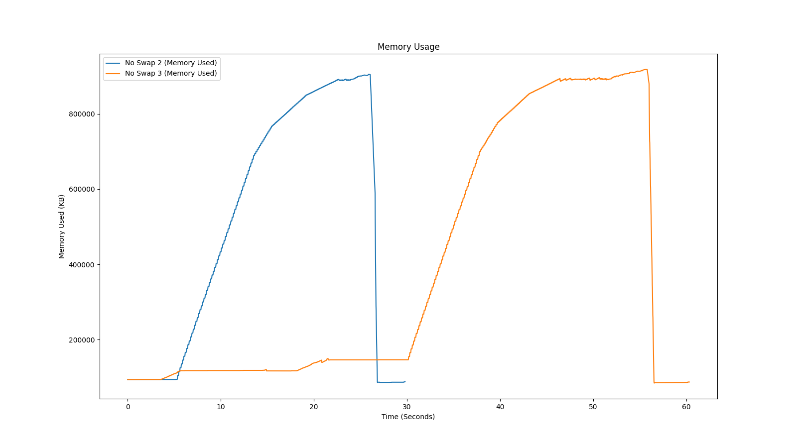

What we saw last week but more data is plotted, not showing all data collected
10MB until 70% usage, then drops down to 5MB from 70% -> 80%, then 2.5MB from 80% -> 90%, then 1.25 until OOM
Appears that with swap disabled and the memory monitor not ran as a background process, the memory monitor gets killed..
This was now run as background process, the first hump is same as above (10MB,5MB,2.5MB, 1.25MB), second hump is 5MB, 2.5MB, 1.25MB, 0.625MB
The small third allocation steps was an attempt to run with allocation printing enabled but was again killed..
Ran identical allocations a few times to compare differences
Obviously not helpful if they aren't aligned, so using the 2nd derivative the plots can be aligned :)
Pulled data every minute from Monday to Today
Just thought why not :), see the difference
(5000MB, 2500MB, 1250MB, 625MB)